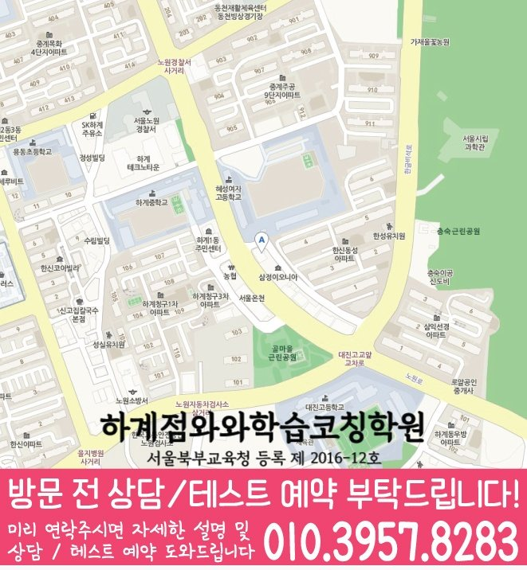

서울 노원구 · 하계점
중계동 영수학원
중계동에서 영수학원을 찾을 때 확인할 하계점 안내입니다. 과목별 학년과 실제 방문 주소를 먼저 살펴보고 학생의 교재·학교 일정에 맞춰 상담을 준비해 주세요.
방문 지점과 안내 학년
- 방문 지점
- 와와학습코칭센터 하계점
- 주소
- 서울 노원구 노원로 257 401호
- 영어
- 초1~초6 · 중1~중3 · 고1~고3
- 수학
- 초1~초6 · 중1~중3 · 고1~고3
안내에 없는 학년은 수강 가능 여부를 확인해 주세요. 아래 학년은 현재 모집 중인 시간표를 뜻하지 않습니다.
여러 과목의 동시 수강과 같은 날 수업 가능 여부는 과목별로 상담해 주세요.
고2 이상 과학은 화학만 가능합니다. 역사·한국사는 운영하지 않습니다.
하계점 과목별 수강 안내
- 영어
- 초1~초6 · 중1~중3 · 고1~고3
- 수학
- 초1~초6 · 중1~중3 · 고1~고3
표에 없는 학년이나 선택과목은 현재 개설 여부를 확인해야 합니다. 수강이 가능한 것으로 안내된 학년이라도 모집 상태와 학생에게 맞는 시간표는 상담에서 다시 확인해 주세요.
- 등록 학원명
- 하계점와와학습코칭학원
- 등록번호
- 서울북부교육청 등록 제 2016-12호
중계동 학교·교재 상담 준비
중계동 지역의 학교 참고 목록입니다. 학생이 실제 사용하는 교과서·평가 범위와 함께 상담하면 필요한 수업을 구체적으로 확인할 수 있습니다.
초등학교 참고 목록
중학교 참고 목록
고등학교 참고 목록
학교명은 지역 상담을 위한 참고 정보입니다. 해당 학교 학생의 현재 재원 여부나 학교별 전담반 개설을 뜻하지 않습니다. 학교 시험 범위와 교재를 준비해 수업에 반영할 수 있는지 확인해 주세요.
영어와 수학의 학습 부담을 따로 계산하기
영어와 수학을 함께 찾을 때도 과목별 수강 학년과 실제 수업 가능 시간을 따로 확인해야 합니다. 같은 센터 안내에 두 과목이 있더라도 통합 과정이나 같은 날 수업을 의미하지는 않습니다.
- 영어는 현재 읽는 교재와 본문 이해·문장 표현에서 어려웠던 부분을 적습니다.
- 수학은 학교 단원과 혼자 풀기 어려운 문제의 첫 단계를 표시합니다.
- 과목별 숙제 시간과 통학 시간을 나누어 적고 무리 없이 가능한 요일을 정합니다.
위 활동은 학생이 현재 배우는 범위에서 해 볼 일반 학습 점검입니다. 해당 센터의 확정 수업 절차나 성적 향상 사례를 뜻하지 않습니다.
하계점 학습 관리 안내
센터 제공 자료에 기재된 학습 관리 방식입니다. 실제 적용 학년·과목, 평가 주기와 안내 방법은 등록 전에 확인해 주세요.
플래너·학습 계획
플래너를 관리하며 매월 정기고사로 학습 진행 상황을 점검합니다.
학부모 안내
매월 과목별 학습 평가서를 학부모에게 전송하는 방식이 안내돼 있습니다.
교습비와 수업 시간
수업 시간·횟수·과목에 따라 비용이 달라질 수 있습니다. 센터의 교습비 안내 자료를 확인하고 학생이 등록할 과정의 금액, 교재비와 추가 비용을 상담에서 대조해 주세요.
이 지점은 공통 참고표만 있어, 이 페이지에 개별 수업료를 표시하지 않습니다. 희망 과목·학년·횟수에 맞는 교습비를 아래 자료와 상담에서 확인해 주세요.
상담에서 함께 확인할 비용 조건
- 과목당 금액인지 여러 과목을 묶은 과정인지, 학생의 실제 학년에 적용되는지 확인해 주세요.
- 납부 기간, 주당 횟수와 1회 수업 시간, 내방·추가 학습 타임의 구성을 함께 확인해 주세요.
- 공부9도·AI 학습·교재비가 포함인지 별도인지 확인하고 최종 등록 금액을 안내받으세요.
운영 시작 참고: 평일 오후 2시 이후. 과목별 실제 수업 시작 시간은 다를 수 있습니다.
주말 정규 수업은 운영하지 않습니다.
하계점 찾아오는 길
서울 노원구 노원로 257 401호
위치 안내 이미지 보기

010-6839-8283건물과 주변 기준점
혜성여자고등학교 건너편, 하계중학교 옆 건물 4층 안쪽입니다.
센터에서 제공한 위치 안내입니다. 주변 상호·출입 동선은 달라질 수 있으므로 위 주소를 기준으로 방문 경로를 확인해 주세요.
상담 전에 준비할 내용
- 학교·학년과 목표 — 재학 학교, 학년과 어려운 부분을 알려 주세요.
- 실제 학습 자료 — 영어·수학 교재, 최근 오답과 실제 수업 가능한 요일을 준비해 주세요.
- 가능한 시간 — 학교 이후 이동 시간과 희망 요일을 함께 알려 주세요.
문의 시 중계동 · 하계점 · 희망 과목과 학년을 말씀해 주세요.
학습코칭 안내 자료
학습코칭 공통 안내 이미지 보기

중계동 수강·방문 자주 묻는 질문
하계점의 영어·수학 안내 학년은 어떻게 되나요?
하계점 자료의 안내 학년은 다음과 같습니다. 영어 초1~초6 · 중1~중3 · 고1~고3 / 수학 초1~초6 · 중1~중3 · 고1~고3. 안내에 없는 학년은 수강 가능으로 판단하지 말고, 현재 모집 여부와 학생에게 맞는 시간표를 확인해 주세요.
하계점에서 영어·수학 주말 수업도 가능한가요?
하계점의 제공 자료 기준입니다. 주말 정규 수업은 운영하지 않습니다. 현재 운영의 변동 여부와 평일 시간표는 등록 전에 확인해 주세요.
하계점의 영어·수학 교습비는 어떻게 확인하나요?
하계점에는 기존 공통 교육비 참고표가 안내되어 있어 현재 지점별 확정 금액으로 적용할 수 없습니다. 교습비 안내 자료와 상담에서 납부 기간·횟수·1회 수업 시간, 교재비와 추가 프로그램 포함 여부를 대조해 최종 등록 금액을 확인해 주세요.
하계점 상담을 위해 어디로 방문하나요?
중계동 안내에 연결된 실제 방문 지점은 하계점입니다. 서울 노원구 노원로 257 401호입니다. 혜성여자고등학교 건너편, 하계중학교 옆 건물 4층 안쪽입니다. 수업 장소와 예약 시간을 확인한 뒤 방문해 주세요.
영어·수학 상담에 무엇을 준비하면 좋을까요?
학교·학년과 희망 과목을 먼저 알려 주고, 영어·수학 교재, 최근 오답과 실제 수업 가능한 요일 등을 준비해 주세요. 중계동에서의 이동 시간과 가능한 요일, 필요한 수업 범위를 함께 알려 주면 수강 조건을 대조하기 쉽습니다.
주소·등록 정보와 과목별 학년은 제공된 센터 자료를 대조했습니다. 정보 수정: 2026년 9월 29일.